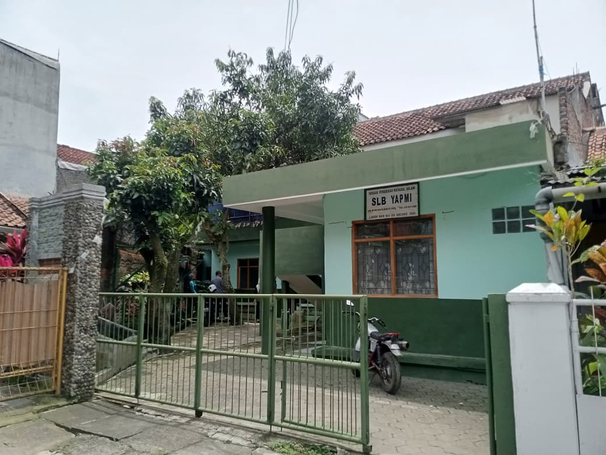

Profil sekolah

Sejarah Singkat Sekolah
SLB YAPMI merupakan satuan pendidikan khusus di bawah Yayasan Pendidikan Mahadul Islam, yang resmi berdiri pada 3 Maret 1989 berdasarkan SK Pendirian No. 046/SLB/JB/III/1989 untuk menyediakan pendidikan bermutu bagi anak berkebutuhan khusus.
Sejak awal berdirinya, SLB YAPMI berkomitmen memberikan layanan pendidikan yang tidak hanya berfokus pada pencapaian akademik, tetapi juga pada pengembangan kemandirian, keterampilan hidup (life skills), pembentukan karakter, dan penanaman nilai-nilai keagamaan. Seiring perkembangan kebijakan pendidikan nasional, sekolah terus melakukan penyesuaian dalam pengelolaan pembelajaran, peningkatan kompetensi pendidik dan tenaga kependidikan, serta penyediaan sarana dan prasarana yang mendukung layanan pendidikan khusus.
Dalam penyelenggaraan pembelajaran, SLB YAPMI memperhatikan kebutuhan individu setiap peserta didik melalui program pembelajaran yang disesuaikan dengan kemampuan, potensi, dan hambatan yang dimiliki. Pendekatan tersebut diharapkan mampu membantu peserta didik berkembang secara optimal, baik dalam aspek akademik, sosial, emosional, maupun keterampilan hidup sebagai bekal untuk berpartisipasi dalam kehidupan bermasyarakat.
Dengan dukungan Yayasan Pendidikan Mahadul Islam, komite sekolah, orang tua peserta didik, dan berbagai pemangku kepentingan, SLB YAPMI terus berupaya meningkatkan kualitas layanan pendidikan yang inklusif, humanis, dan adaptif terhadap perkembangan ilmu pengetahuan serta teknologi, tanpa meninggalkan nilai-nilai religius dan karakter yang menjadi ciri khas sekolah.
Visi & Misi
Visi
Terwujudnya peserta didik berkebutuhan khusus yang berakhlak mulia berbasis Al Qur'an dan As-Sunnah, mandiri dalam kehidupan harian, serta memiliki keterampilan diri yang bermanfaat.
Misi Satuan Pendidikan
- Menanamkan nilai keagamaan dan akhlak Islami melalui adab, ibadah harian, dan pembiasaan karakter sesuai kemampuan peserta didik.
- Mengembangkan kemandirian peserta didik melalui pembelajaran khusus yang fokus pada merawat diri, keselamatan diri, komunikasi dasar, dan adaptasi sosial.
- Mengoptimalkan pembelajaran individual (PPI/RPI) dengan proses belajar yang terencana, fleksibel, aman, nyaman, dan berpusat pada siswa.
- Mengasah keterampilan praktis dan vokasi berkelanjutan melalui seni kreatif, kewirausahaan sederhana, serta penguatan potensi pertanian-peternakan terpadu.
- Meningkatkan kompetensi profesional pendidik melalui pengembangan pedagogik dan kolaborasi antar guru secara mandiri dan berkelanjutan.
- Membangun kolaborasi kemitraan dengan orang tua, Komite Sekolah, Yayasan, Dinas Pendidikan, dan pihak luar untuk mendukung magang dan penyerapan kerja.